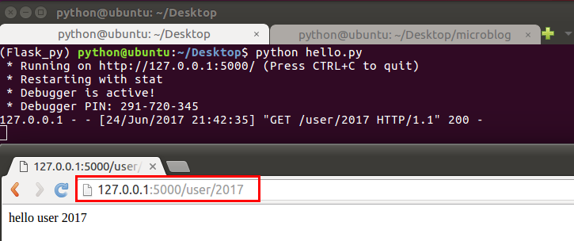

路由定义的基本方式
请求方式限定
使用 methods 参数指定可接受的请求方式，可以是多种
@app.route('/',methods=['GET', 'POST'])
def hello():
return 'hello world'
给路由传参示例
有时我们需要将同一类URL映射到同一个视图函数处理，比如：使用同一个视图函数 来显示不同用户的订单信息。
路由传递的参数默认当做string处理
@app.route('/orders/<order_id>')
def hello_itheima(order_id):
# 此处的逻辑: 去查询数据库改用户的订单信息, 并返回
print type(order_id) # 类型为unicode
return 'hello itcast %d' % order_id
这里指定int, 会调用系统的路由转换器进行匹配和转换.
- 大致原理是将参数强转为int, 如果成功, 则可以进行路由匹配
- 如果参数无法转换成功, 就无法匹配该路由
@app.route('/orders/<int:order_id>')
def hello_itheima(order_id):
print type(order_id) # 类型为int
return 'hello itcast %d' % order_id
